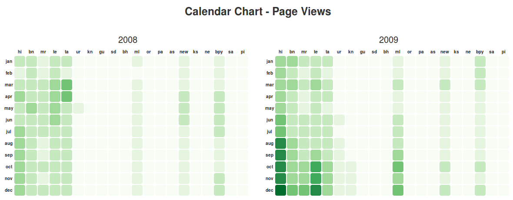
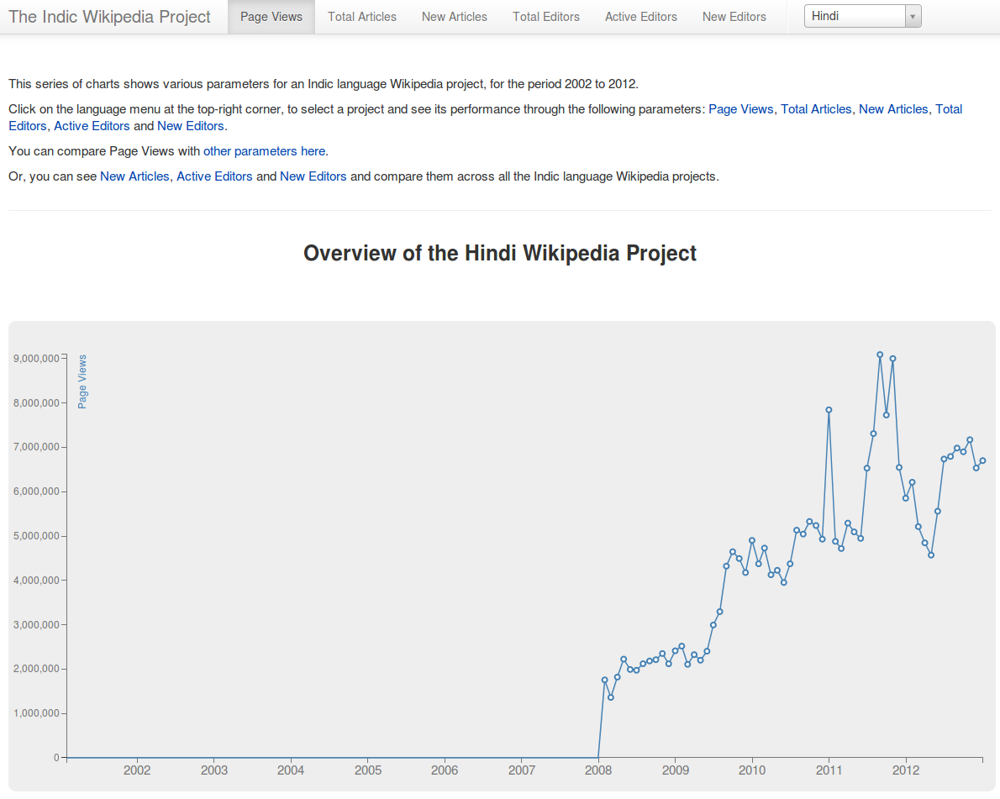
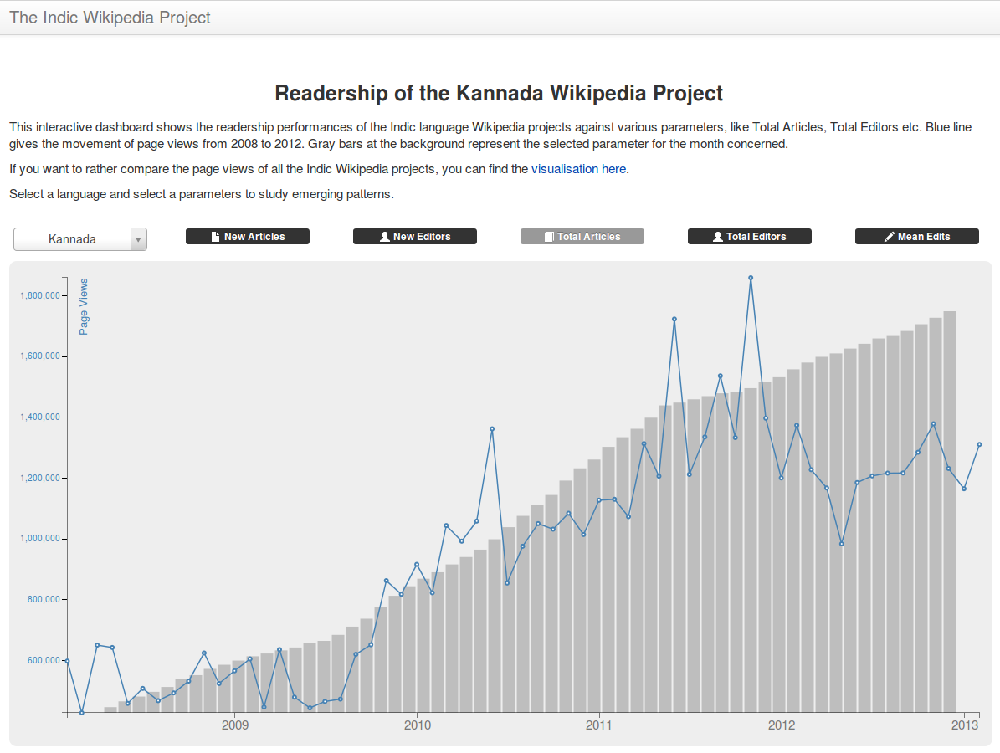

Co-authored with Sajjad Anwar. Published by the Centre for Internet and Society.
Sajjad Anwar and I undertook a series of visualisations of readership and editing data of the Indic Wikipedia projects in early 2013. The work was supported by the Centre for Internet and Society, and the data was provided by the Wikimedia Foundation. This post looks at the basic parameters associated with the Indic Wikipedia projects, and shares visualisations divided in three focus areas.
Introduction
Unlike the basic parameters that we discussed last month, we received the Page Views data only from January 2008 onwards. The project-specific pages allow the user to see all the different variables related to a Indic language Wikipedia project in one page, thus giving a general overview of the activities in that project and their inter-relationships. Instead of comparing multiple projectsn, as in the calendar charts and motion chart discussed in the last post, the project-specific pages focus on understanding one Wikipedia project in detail.
Page Views
The data came in a structure that is useful for human-readability of the data but not so much for visualisation. The first column contained the date value (01/01/2008, 01/02/2008, and so on), followed by a column for each Indic Wikipedia project (Assamese, Bhojpuri, and so on) and one for the total Page Views across projects for the month concerned. The original data file can be accessed here. We re-formatted this data to the following column structure: the first column gives the date value, the second column gives the language of the Wikipedia project, and the third column gives the Page Views value. Further, the Page Views file contained data for 2013 that are not available for any other variables (like Total Articles, Total Editors etc.). So we decided to remove the 2013 values from the Page Views file for easier comparison with other variables. The data file that we finally used for the visualisation can be accessed here.
Calendar (Heatmap) Chart
The first chart that we created was the calendar (heatmap) chart discussed in detail in the last post. For the Page View variable we only had data form 2008. We plotted it as calendar-like heatmap to allow quick cross-project comparisons of trends in readership. The chart can be accessed here.

Source: http://geohacker.in/indicwiki/page-views.
Project Pages
So far, we have been visualising the data from an overall perspective, constantly asking the question: “How does project A compare to project B?”. The Project pages shed light from a different angle: “How did project A get to this point?”. Each of the projects are visualised in isolation around the basic parameters to understand how they have changed/evolved over the years. We wanted to keep this as simple as possible and decided to use straight forward line charts. This also ensures that the patterns are clearly evident. On the right corner of the navigation bar is the project selector. You can search or pick a project and the page will load the charts specific to that project. Each project has a different page, this makes it easier for you to share the project that you are interested in. The chart employs filtering and dynamic scales. Dynamic scales are important because not all the projects have the same rate of growth.

Source: http://geohacker.in/indicwiki/projects.
Readership Dashboard
We were not satisfied with creating only the calendar heatmap chart for Page Views. Being a very important variable for anybody trying to understand activities on Indic Wikipedia projects, we wanted to create a more detailed visualisation for the variable. While the project-specific pages do allow for comparing Page Views for a certain Indic Wikipedia with its other variables (such as Total Articles), we wanted to make that comparison even easier. Hence we decided to make a chart combining a line graph showing the movement of Page View for a project across the years and bar graphs showing a separate variable for the same project. Thus we created the Readership Dashboard. The dashboard has two controls: project selector and the parameter selector buttons. Selecting a project from the dropdown will update the line chart showing the movement of page views. Hover over the line graph points to see the date of observation and the corresponding value. The bars behind the line represent the selected parameters. Click on the parameter buttons to load different parameters as the background bar graph. Hover over the bars to see the date and the value. The bar graph is carefully aligned to the line chart such that the visualisation reflects the relation in movement of both. However, please note that the vertical scale of the line graph and the bar graphs are not the same.
